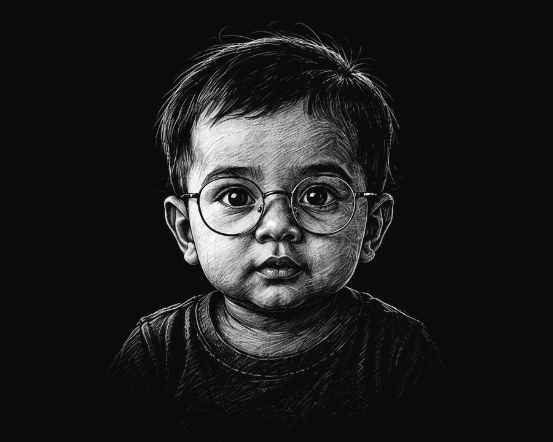
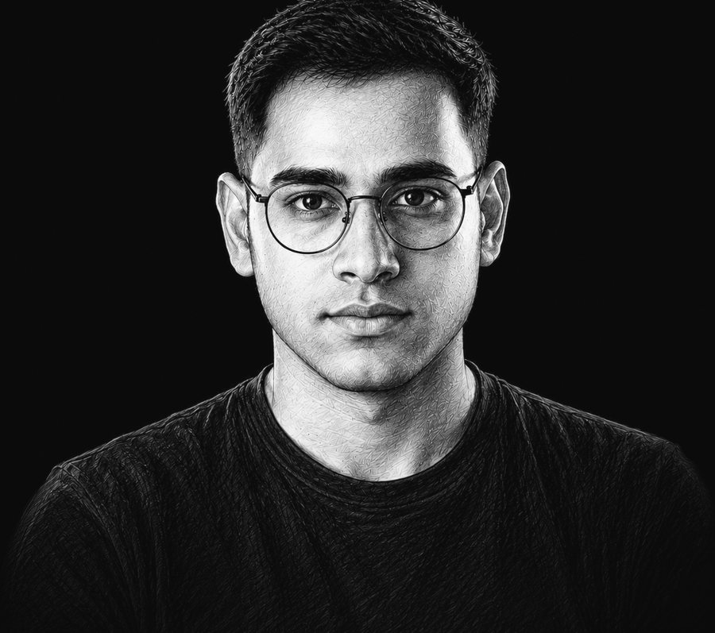
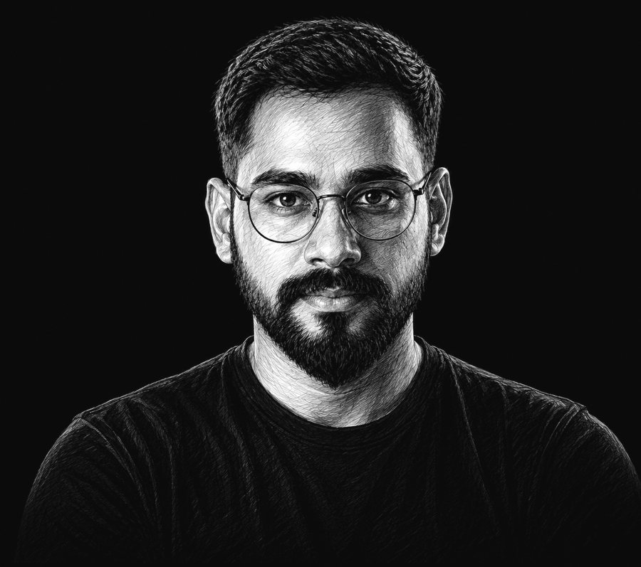
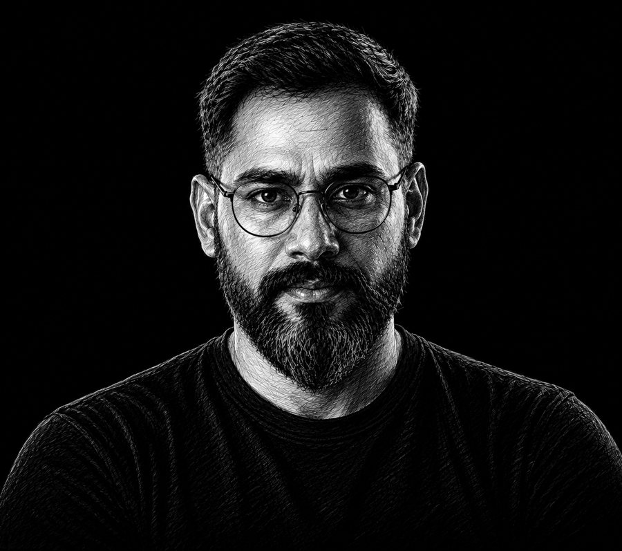

The curious case of an optimist.
One question has carried every chapter: what if it could be better? Everything else, the craft, the teams, the products, the numbers, followed that question.
Beginnings
Born with curiosity. Seeing the world differently.
Exploring
Questions turn into obsessions. Learning. Unlearning. Growing.
Building
Ideas take shape. Designing organisations. Creating impact.
Reflecting
Experience becomes wisdom. Sharing. Inspiring the next curious minds.
Beginnings
Born with curiosity. Seeing the world differently.

Exploring
Questions turn into obsessions. Learning. Unlearning. Growing.

Building
Ideas take shape. Designing organisations. Creating impact.

Reflecting
Experience becomes wisdom. Sharing. Inspiring the next curious minds.

Some people find a career. Mine found me: a question I couldn't put down. Why do some products feel effortless while others feel like work? In 2010 I followed that question to design school, and it has pulled me forward ever since. Not a day of it has felt like a job description.
At HashedIn I was designer number one in a company of five hundred engineers that had never needed one. Four years of listening, proving, and building later, design was a 32-person practice with its own identity, strong enough to become part of Deloitte. Then came exploring at scale: global trade platforms with Standard Chartered, and products serving ten million small businesses at Khatabook.
Yubi was five brands and thirteen products moving fast in different directions. I grew the design organisation from two people to more than twenty, and we built the systems that made speed safe: one design language that cut operating costs by ₹72 crore, then ₹186 crore in a single year. And Aspero, the product nobody believed in, went from ₹18 crore in losses to ₹860 million in revenue. Not by making it prettier. By making it believable.
Today I help CPOs and CTOs make their design organisations AI-fast, with design-to-development cycles cut by up to 40%. And I'm choosing the next seat deliberately: a place where design is meant to be a competitive advantage, not a service layer. The tools have changed beyond recognition. The question from chapter one hasn't changed at all. What if it could be better?